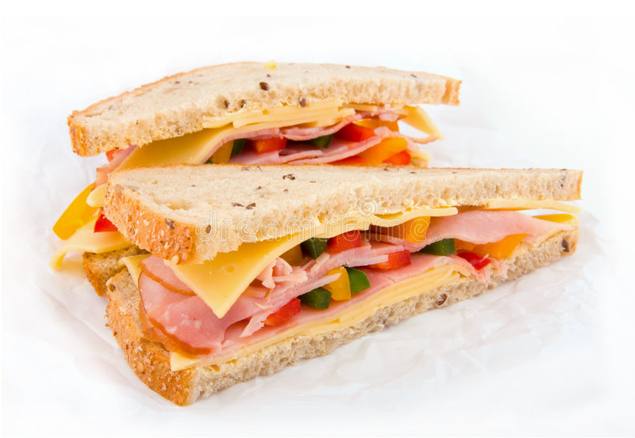

Sandwitch

Description
Sandwitch is a quick meal and a good choice for breakfast.
Required ingredients
- Bread
- Salad
- Ham
- Mustard
- Tomato
Cooking steps
- Cut the bread on two equal sides
- Slice the ham so that it fits the sandwitch
- Put the ham on one sliced half of the bread
- Put the salad, mustard and tomato on top of the ham
- Cover the meal with the second half of the bread